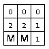
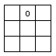
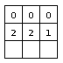
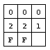
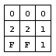
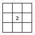

| Source file: | mines.{c, cpp, java, pas} |
| Input file: | mines.in |
| Output file: | mines.out |
A variation of the minesweeper game is available for almost every computer platform. Your employer wants to create yet another version that is targeted toward casual, as opposed to expert, players. Your task is to write a program that takes a minesweeper board and returns the minimum number of covered, unmined cells that remain after a casual player has tried his/her best. The details of the game and program are decribed below.
A minesweeper board consists of a rectangular grid of cells, with one or more cells containing a mine. The entire board is initially presented with all the cells covered, i.e., blank. The object of the game is to uncover all the cells that do not contain a mine. If a mine in uncovered, the game is over and the player loses. A cell can be in one of 3 states: covered, cleared/uncovered, or flagged as a mine.
When a player clears a cell that does not contain a mine, that cell displays the number of mines in cells that are adjacent to it. These numbers help the player determine where the mines are located. The adjacent cells are the cells that form a 3x3 square with the cleared cell in the center. Depending on a cell's location, it will have between 3 and 8 adjacent cells. The board in Figure 1 below shows two mines at locations (3,1) and (3,2), and the numbers of adjacent mines for each of the remaining cells.
A casual player makes use of this information in the following way. First the player selects one cell from a totally covered board. If it's a mine, the game is over. Otherwise, the player clears the cell and then applies the following two rules to cleared cells on the board until no further progress can be made. Let (x,y) be the location of a cleared cell, and let f, c, and m be the number of flagged, covered, and mined cells adjacent to (x,y).
Note that after successfully clearing the first cell, a casual player never clears or flags a cell except as dictated by rule 1 or 2, which means that the player may get "stuck". When a casual player is stuck, the game is over; no further guesses are made, and the player will not use more sophisticated rules that might allow him/her to safely clear additional cells.
Figure 2 below shows an application of these rules using the board from Figure 1.
|  |  |  |  |  |  | ||||
| Figure 1 | Figure 2a | Figure 2b | Figure 2c | Figure 2d | Figure 3 |
Figure 2a shows the board after a player initially clears cell (1,2). Rule 1 applies, since (0 flagged = 0 mined neighbors), so the player clears the adjacent cells at (1,1), (1,3), (2,1), (2,2), and (2,3), which leads to Figure 2b.
From the board in Figure 2b, the player can consider cell (2,1) and apply rule 2 (0 flagged + 2 covered = 2 mined) to flag cells (3,1) and (3,2) as mines. This generates Figure 2c.
Finally, by looking at cell (2,3), the player can again apply rule 1 to clear cell (3,3), since cell (2,3) has exactly 1 adjacent mine, and cell (3,2) is already flagged as a mine. Now, all the cells without mines have been cleared, so the game stops with the player winning.
As indicated above, these two rules are not sufficient to solve every game board from every starting position, so the player might get stuck. Again, considering the board in Figure 1, if the player instead first cleared cell (2,2), the resulting board appears as Figure 3. The player cannot make any further progress, since neither rule 1 nor rule 2 clears or flags any new cells. In this case the player is stuck with 6 covered cells that do not contain mines.
You must write a program that looks at a game board and determines the smallest number of covered, unmined cells that could possibly remain when a casual player plays the game as described. For the game board in Figure 1, the answer is 0.
The input file contains one or more game boards, followed by a final line containing only two zeros. A game board starts with a line containing two integers, r and c, the number of rows and columns in the game board; r and c will always be at least 3. The total number of cells in any board will never be greater than 40. The rest of the data set consists of a graphical representation of the game board, where an upper case 'M' represents a mine and a period '.' represents an empty cell. There will always be at least one 'M' and at least one '.' on each game board.
For each data set write one line with a single integer indicating the smallest number of covered, unmined cells for that board.
Example input: | Example output: |
|
3 3 ... ... MM. 3 4 M.M. .M.M M.M. 7 5 ..... ..... MMM.. M.M.. MMM.. ..... ..... 4 4 ...M .... .... M... 0 0 |
0 5 1 0 |
Last modified on October 23, 2003 at 8:34 PM.